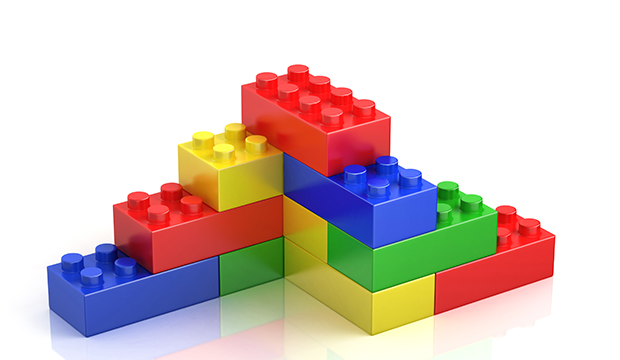

Practical Type Safety

Jacob Wang
Hello
- Scala Developer at

- @jatcwang
This talk
- Type Safety - What and why?
- Principles
- Practical techniques for Scala
Static Types & Type Safety
- Static types
- Prevent incorrect behaviour, without running the program
- Type Safety is “how much” we take this approach
The Goal
What do we want as software developers?
- Write correct & maintainable software faster!
- I believe that a language with good static type systems really helps!
- Tooling: Autocomplete, code browsing, refactoring
- Understanding the code
- Design & Prototyping
But..
- Consider the trade-offs
- Ergonomics (in the language you’re using)
- Implementation Complexity / Time
- Performance
- Is it understandable?
- Compile time
Principles & Techniques
I. Guard against change
- Code is written once, and changed many times
- Change in requirement
- Change in code architecture (refactoring)
- Want: Compile errors where our previous assumptions no longer holds
- Prompt us to reconsider the logic
- “If I change a basic assumption I’m making here, will the compiler tell me?”
I. Guard against change
Avoid catch-alls in pattern matching
sealed trait User {
def name: String
}
final case class Guest(name: String) extends User
final case class Member(name: String) extends User
final case class Admin(name: String, level: Int) extends User
def canEdit(role: User): Boolean = {
role match {
case _: Guest => false
case _ => true
}
}Bug if we add another role that isn’t allowed to edit!
I. Guard against change
Avoid catch-alls in pattern matching
I. Guard against change
Avoid default parameters
I. Guard against change
Avoid default parameters
Use explicitly named values/functions
I. Guard against change
Avoid toString
- Pervasive use of toString leads to bugs and bad logs because toString is callable on everything!
I. Guard against change
Avoid toString
Solution 1:
- Use a custom interpolator that only allows
Stringparameters, - Explicit conversion to String
- Don’t use toString unless you’re forced to (e.g. Int)
I. Guard against change
Avoid toString
Solution 2: Custom typeclass
- Write custom typeclass e.g.
UrlShow - Provide typeclasses instances for types that are safe to be printed
- Scala allow custom string interpolators (For example see
cats.Show)
II. Make it easy to do the right thing
…and hard to make mistakes
- Use types & language features as guard rails
II. Make it easy to do the right thing
Newtypes
Wrap existing types in a new class
- Readability - Domain concepts!
- Avoid mistakes
- Improves refactoring
- Enforce additional constraints
II. Make it easy to do the right thing
Newtypes
Which is easier to use and understand?
II. Make it easy to do the right thing
Newtypes
How?
- Scala 2: Case class + AnyVal, or newtype library
- Scala 3: Opaque Type
- AnyVal will avoid allocating the wrapper class*
- Reduce allocations (GC) and indirection
- *Allocations are still incurred in some cases
- newtype library does not suffer from this issue
II. Make it easy to do the right thing
Newtypes with constraints
Enforce constraints using wrapper classes
- We want:
- No direct construction (
new,apply) norcopy unapply,hashCodeandequals
- No direct construction (
II. Make it easy to do the right thing
Newtypes with constraints
Introducing sealed abstract case class!!
- No
copy,newnorapply unapply,equals,hashCodestill works
Recommendation:
- A validated construction function
- Returns Either / Validated (cats)
- An unsafe construction (explicitly marked unsafe)
- Throws exception if an invalid input is provided
II. Make it easy to do the right thing
Newtypes with constraints
sealed abstract case class DirectoryName(strValue: String)
object DirectoryName {
def fromString(str: String): Either[DirectoryNameError, DirectoryName] = {
if (str.isEmpty)
Left(DirectoryNameError.StringIsEmpty)
else
// Use anonymous subclass (allowed only in this file) to create an instance
Right(new DirectoryName(str) {}) // ###
}
import cats.syntax.either._ // Provides .valueOr extension method
// For tests or parsing from trusted/validated sources (e.g. Database)
def fromStringUnsafe(str: String): DirectoryName = {
fromString(str).valueOr(e => throw e)
}
}II. Make it easy to do the right thing
Named Parameters
Named parameters improves readability and help spot mistakes
II. Make it easy to do the right thing
Named Parameters
III. Build abstractions with types
- Use types to help build abstractions and communicate intent…and don’t lie!
- Good abstractions
- Reduces cognitive overhead when reading code
- Allows aggresive refactoring
III. Build abstractions with types
Parametricity
- Obeying what we know about a type
- No reflections
III. Build abstractions with types
Parametricity
Solution: Use typeclasses! (or subtype constraints)
III. Build abstractions with types
Use an IO type!
Use a referentially transparent IO type as found in cats-effect, Monix or ZIO
- Refactor freely because side-effect definition is separate from construction!
- Cancellation, Retries, Parallelism
Recap
- Guard against change
- Make it easy to do the right thing
- Build abstractions with types
In practice:
- Avoid default parameters
- Avoid catch-alls in pattern matching
- Avoid toString
- Newtypes
- Used named parameters
- Parametricity
- Use IO
Final Thoughts
- Learn, but verify - “Does it really solve a problem for me?”
- The principles applies to other languages too!
- Always keep the trade-offs in mind
References
- Constraints Liberate, Liberties Constrain by Rúnar Bjarnason
- Cats Effect: The IO Monad for Scala by Gabriel Volpe
- Scaluzzi - Linting rules with Scalafix